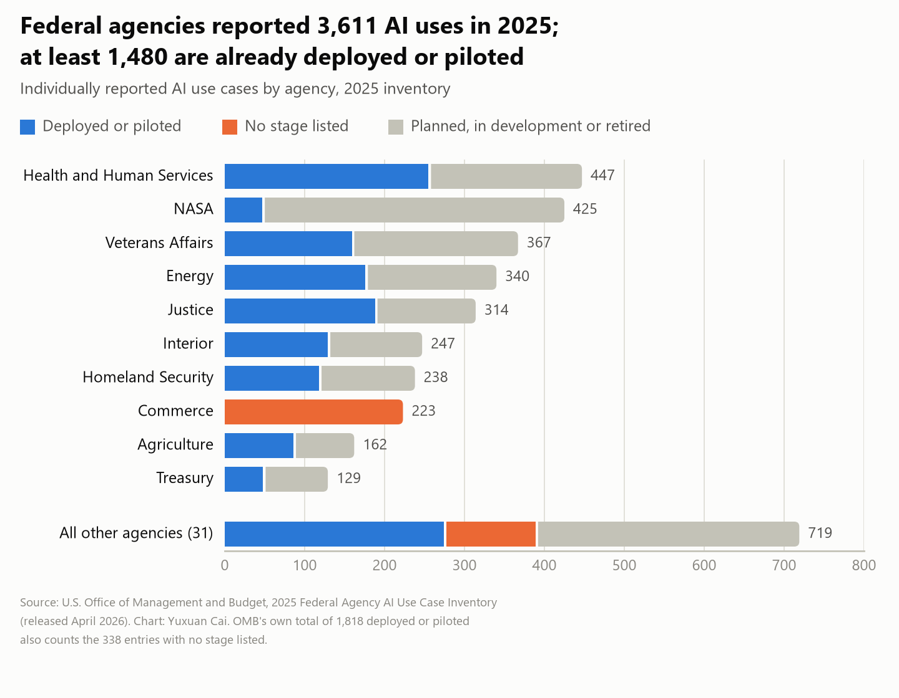
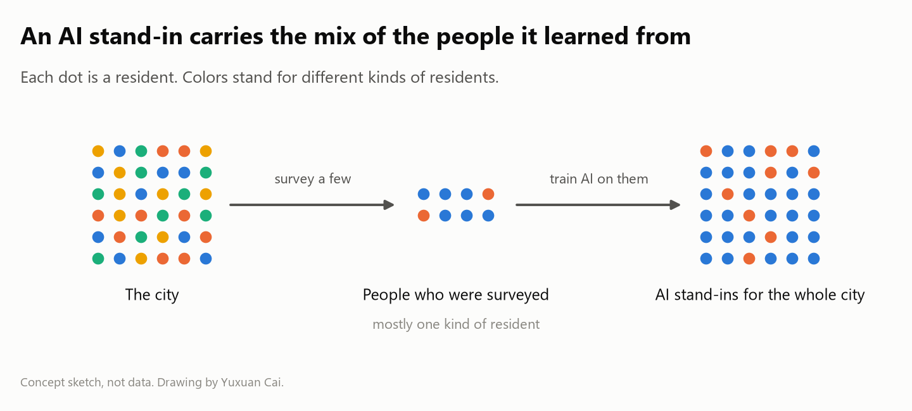
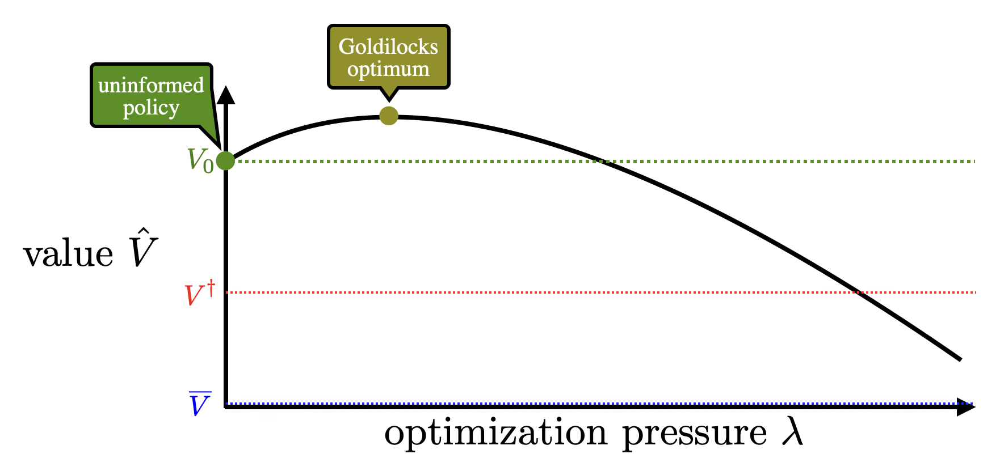

AI is entering the governments that make decisions about cities. In April 2026, a U.S. federal inventory listed more than 3,600 uses of AI, over 1,400 already deployed or in pilots.1 Cities are both adopting it and questioning it. In July, Guangzhou launched a citywide government AI hub with 28 AI agents,2 and in October New York's City Council held a hearing on the risks AI poses to residents.3 The rules being set now will shape, for years, how cities hear residents and decide what gets built. As a PhD student in city planning, I am interested in exactly this.

Cities have always learned what residents want through intermediaries, from planners and consultants to surveys and public hearings4. Generative AI now sits on both sides of these exchanges. Residents can draft public comments with chatbots5. Models also summarize public input on deliberation platforms6. My research follows this shift in three ways. I use AI as a tool to extract information from images7 and planning documents8, predict neighborhood conditions9, and simulate how residents respond to policy10 and how stakeholders with competing interests negotiate with one another11. I also study the models themselves as objects of research, examining how they represent urban information internally12, whether they carry biases13, and whether they pursue the goals we set for them14. Finally, I ask how planning procedures and public participation should change once AI enters them.
Measuring places, simulating people
Planners learn how places feel and how people will respond to a plan through surveys, interviews and site visits. These methods take time and money, so planners can visit only some streets and hear from only some residents. AI tools extend that evidence. For instance, models trained on people's judgments of street images can rate streets those people never saw,7 and language models given residents' backgrounds can answer surveys and negotiate in their place.10,11 Either way, the tool learns from the people who were surveyed or interviewed, and it is only as representative as they are.15 The people who take part in planning already differ systematically from the city as a whole,16 and studies find that AI stand-ins match real people only loosely17 and make the members of a group seem more alike than they are.18

A model adds its own picture, bias and goal
Yet the model itself adds distortions. Part of what it knows about places can be read from its internals,12 and that knowledge is biased against poorer places.13 Stanford researchers prove that a goal precise enough to be safe would take more information to state than a designer can give, so models pursue rough goals.14 A highly capable model then reaches outcomes that score well on the rough goal but can be catastrophic. Limiting its capability by the right amount helps.14 A city holds far more things that people care about than any goal can list, so I expect it to be more exposed. A system rewarded for tree cover, for example, could plant where planting is cheap rather than where heat is worst.

AI is also a social change
When residents write with AI and officials read with it, their exchange runs through models, which are already reshaping how groups share information and decide together.19 The influence reaches how people think, since users can absorb an AI's biases without noticing20 and wide use may narrow the range of ideas a community produces.21 As a review of AI in cities finds, AI's value depends on honest evaluation and on human judgment and accountability.22 Planning therefore cannot just add AI to old routines.
Cities are writing their rules for AI now, so we have to know what changes when AI stands between residents and the officials who decide.
“The city is vast and we still have so much to say to each other.”
Oscar (François Périer) in Federico Fellini’s Nights of Cabiria (1957)